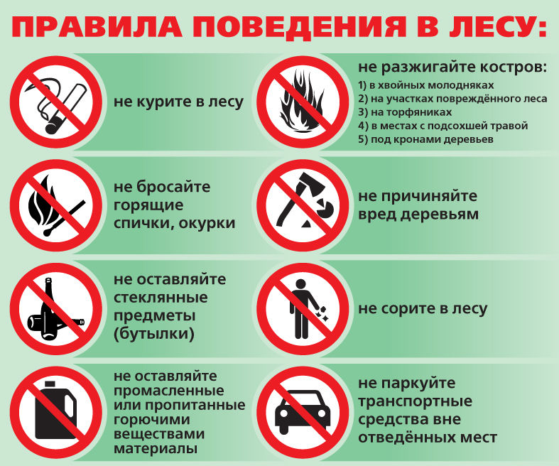
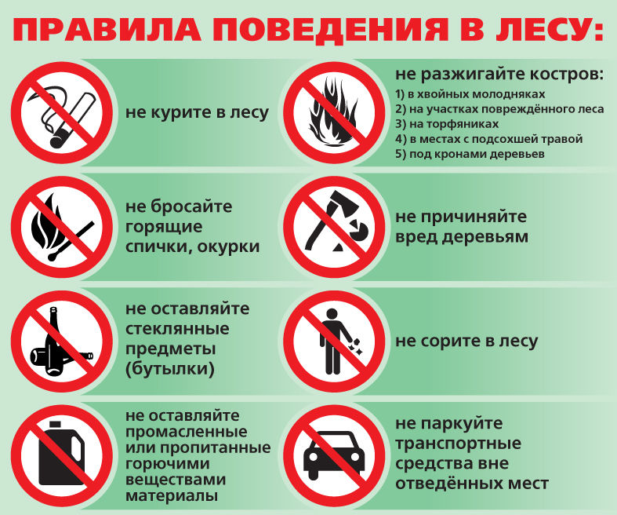

Заголовок страницы
Походы по Ленинградской области
Ястребиное озеро
Это озеро в северной части Карельского перешейка в Приозерском районе Ленинградской области. Размеры озера — 2 на 0,75 км. Глубина — до 17 м в северной части озера.
Озеро расположено вблизи границы с Республикой Карелия, в 10 км от железнодорожной станции посёлка Кузнечное. Озеро находится во впадине между крутыми гранитными уступами оконечности Балтийского щита, возвышающимися до 50 м. Скала Парнас является популярным местом скалолазания. Ястребиное озеро и его окрестности (включая озёра Пестово, Глухариное и Проточное) являются охраняемым природным памятником «Озеро Ястребиное». До переименования после Великой Отечественной войны носило название Хаукан-ярви.
В 2006 году властями Республики Карелии были выданы лицензии на организацию гранитных карьеров в Карелии рядом с природным памятником, но в соседнем субъекте Федерации в результате общественной кампании против проекта и ходайствования властей Ленинградской области в 2007 году лицензии были отозваны, и в охраняемую территорию вошла 10-километровая зона вдоль границы с Карелией недалеко от озера. Тем не менее, по состоянию на 2020 год в 2 км от озера ведется добыча щебня.
Как добраться?
Ястребиное озеро находится в 183 км. от Санкт-Петербурга.
На электричке с Финлядскго вокзала (ст.метро площадь Ленина) до станции Кузнечное. Стоимость билета 399 руб. (в марте 2023г)
Затем пешком 15 километров. Пишут, что могут довезти такси, но не до самого озера.
Поскольку путь не близкий, то рассчитайте свою дорогу так, чтобы не пришлось ставить палатки в темноте. Выходя из станции, вам нужно будет подойти к железнодорожному переезду и идти вдоль одноколейки, она уходит немного всторону от основных путей. Пройдя, немного вы наткнетесь на карьер, добывающий щебень. На момент нашего похода, он был действующий. Пройдите некоторое расстояние по нему и в месте, указанном на карте ниже, поверните налево. Так называемая по каким-то причинам "Тропа Хо Ши Мина". На карте Яндекс она отмечена, если достаточно приблизить карту. Там будет тропа, которая приведет вас к озеру.
Местность не дикая, тропы проложены, обхожены, туристы сделали ориентиры, помогающие не заблудиться.
Расписание электричек
 Что с собой взять?
Рюкзак
Что с собой взять?
Рюкзак
Туристический коврик и спальник
Сменную обувь и одежду
Дождевик
Компас
Фонарик
Спрей от насекомых (в теплое время года)
Посуду и продукты для приготовления обеда
Термос с теплым напитком
Крем с солнцезащитным фактором
Аптечку
Туалетную бумагу
 ОСНОВЫ ТЕХНИКИ БЕЗОПАСНОСТИ В ПОХОДЕ
Существует четкая инструкция по технике безопасности туриста в походе.
Не стоит пренебрегать мерами предосторожности в походе, даже если они кажутся вам незначительными. Осознанность всех участников туристической группы поможет избежать непредвиденных ситуаций, провести время полезно и приятно.
Инструкции по оказанию первой помощи в походе

Озеро славится своими красотами и живописными окрестностями. Побывать в нем стоит каждому уважающему себя туристу.Это локация прекрасно подойдет как для семейного отдыха,так и для испытания себя в экстремальных видах спорта.
Поэтому не задумываясь собирайте рюкзаки,пакуйте вещи и садитесь на ближайшую электричку :)
ОСНОВЫ ТЕХНИКИ БЕЗОПАСНОСТИ В ПОХОДЕ
Существует четкая инструкция по технике безопасности туриста в походе.
Не стоит пренебрегать мерами предосторожности в походе, даже если они кажутся вам незначительными. Осознанность всех участников туристической группы поможет избежать непредвиденных ситуаций, провести время полезно и приятно.
Инструкции по оказанию первой помощи в походе

Озеро славится своими красотами и живописными окрестностями. Побывать в нем стоит каждому уважающему себя туристу.Это локация прекрасно подойдет как для семейного отдыха,так и для испытания себя в экстремальных видах спорта.
Поэтому не задумываясь собирайте рюкзаки,пакуйте вещи и садитесь на ближайшую электричку :)

 Счастливого пути!
Счастливого пути!
путеводитель
обзор
Контакты для связи